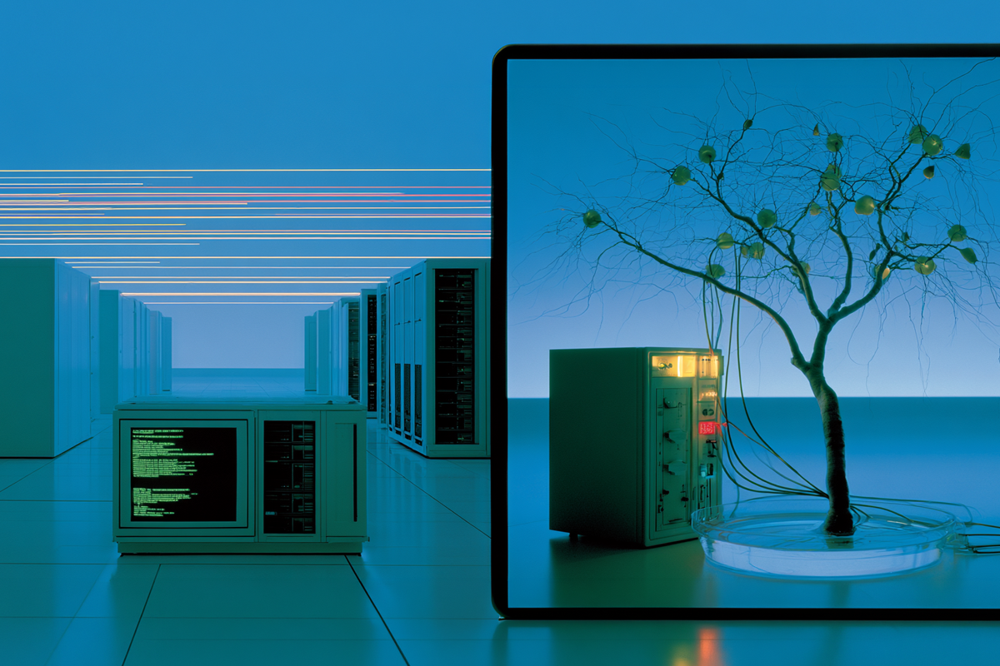
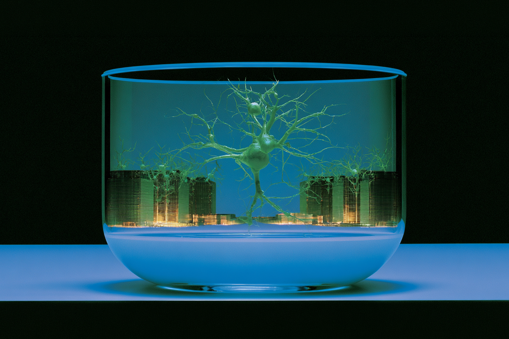

La noticia parece sci-fi, pero es real
La IA ahora usa neuronas humanas
La IA ahora usa neuronas humanas

Durante años hemos pensado en la inteligencia artificial como algo súper frío: servidores gigantes, computadores procesando datos y algoritmos funcionando a toda velocidad en algún lugar lejano del planeta. Todo muy técnico. Todo muy máquina.
Pero ahora la cosa se puso más rara. Y también más interesante.
Hoy existen proyectos que están usando neuronas humanas para desarrollar sistemas de IA. Sí, neuronas reales. Y algunas incluso fueron entrenadas jugando videojuegos para aprender patrones y reaccionar mejor.
Y, aunque suene medio Black Mirror, no es ficción. Está pasando ahora.

Lo más impactante es lo que representa este experimento en sí. Porque por primera vez la IA empieza a mezclarse con algo biológico.
Ya no hablamos solamente de líneas de código. Hablamos de sistemas híbridos, donde la frontera entre “humano” y “máquina” empieza a ponerse un poco más borrosa.
Y claro, eso inevitablemente da para cuestionarse varias cosas. ¿Qué entendemos realmente por inteligencia? ¿Hasta dónde queremos llevar esta tecnología? ¿Y qué pasa cuando deja de sentirse completamente artificial?
Uno podría pensar que esto es algo encerrado en laboratorios ultra futuristas, lejísimos de Latinoamérica y de nuestra vida diaria. Pero si algo hemos aprendido con la tecnología, es que las cosas avanzan rapidísimo.
Hace no tanto tiempo, hablarle a una IA parecía raro. Hoy hay quienes la usan para estudiar, trabajar, comparar productos o incluso decidir qué hacer con sus lucas.
Y toda esa evolución viene del mismo lugar: sistemas que se vuelven cada vez más “inteligentes”, más rápidos y más cercanos a cómo pensamos nosotros.

Obvio que noticias así generan una mezcla rara entre fascinación y nervio. La inteligencia artificial puede cambiar muchísimo en los próximos años. Pero la diferencia sigue estando en las personas que la usan y con qué criterio.
Y en un mundo donde cada vez más decisiones pasan por plataformas, algoritmos y herramientas inteligentes, entender aunque sea un poco “hacia dónde va la micro”... ya es una ventaja.
 Tecnología
TecnologíaSi eres como yo y revisas TikTok e Instagram constantemente, te habrás dado cuenta de que estas redes son casi como un experimento social.
 Tecnología
TecnologíaHablamos mucho de inteligencia artificial. La tenemos integrada en nuestra vida, nos ayuda en nuestros trabajos y le preguntamos cosas de…
Estamos tan acostumbrados a ver la inteligencia artificial hacer cosas random (dibujar imágenes raras, responder preguntas existenciales…